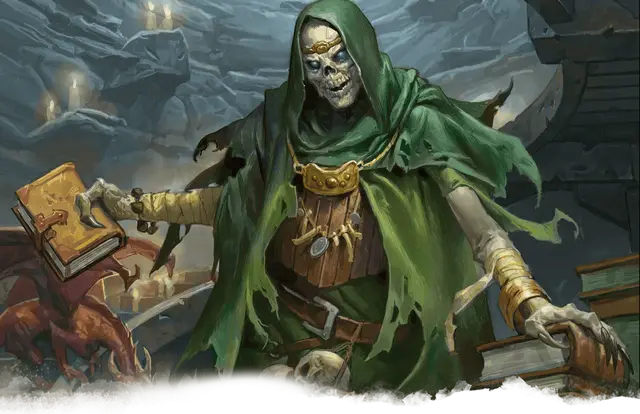

Эззат
Ezzat
Средняя Нежить, любое злое мировоззрение, именной НИП

Класс Доспеха 17 (природный доспех)
Хиты 135 (18к8 + 54)
Скорость 30 футов
| мод | спас | ||
|---|---|---|---|
| СИЛ | 11 | +0 | +0 |
| ЛОВ | 16 | +3 | +3 |
| ТЕЛ | 16 | +3 | +10 |
| мод | спас | ||
|---|---|---|---|
| ИНТ | 20 | +5 | +12 |
| МДР | 14 | +2 | +9 |
| ХАР | 16 | +3 | +3 |
Навыки Восприятие +9, История +12, Магия +19, Проницательность +9
Сопротивление урону некротическая энергия, холод, яд
Иммунитет к урону яд; дробящий, колющий, рубящий от немагических атак
Иммунитет к состояниям паралич, очарование, отравление, истощение, испуг
Чувства истинное зрение 120 футов, пассивное Восприятие 19
Языки Общий, Дварфийский, Драконий, Подземный, Сильван
Опасность 21 (33000 опыта)
Бонус мастерства +7
Особенности
Особое снаряжение. Эззат носит амулет защиты от обнаружения и поиска [amulet of proof against detection and location], скрывающий его от магии школы прорицания и ока наблюдения Халастера.
Легендарное сопротивление (3/день). Если Эззат проваливает спасбросок, он может вместо этого сделать спасбросок успешным.
Восстановление. Если у Эззата есть филактерий, лич через 1к10 дней после уничтожения получает новое тело, восстанавливает все хиты и становится живым. Новое тело появляется в пределах 5 футов от филактерия.
Использование заклинаний. Эззат является заклинателем 18-го уровня. Его базовой характеристикой является Интеллект (Сл спасброска от заклинания 20, +12 к попаданию атаками заклинаниями). У него подготовлены следующие заклинания волшебника:
• Заговоры (неограниченно): волшебная рука [mage hand], луч холода [ray of frost], фокусы [prestidigitation];
• 1 уровень (4 ячейки): волна грома [thunderwave], волшебная стрела [magic missile], обнаружение магии [detect magic], щит [shield];
• 2 уровень (3 ячейки): Мельфова кислотная стрела [Melf’s acid arrow], невидимость [invisibility], обнаружение мыслей [detect thoughts], отражения [mirror image];
• 3 уровень (3 ячейки): восставший труп [animate dead], контрзаклинание [counterspell], огненный шар [fireball], рассеивание магии [dispel magic];
• 4 уровень (3 ячейки): переносящая дверь [dimension door], усыхание [blight];
• 5 уровень (3 ячейки): наблюдение [scrying], облако смерти [cloudkill];
• 6 уровень (1 ячейка): распад [disintegrate], сфера неуязвимости [globe of invulnerability];
• 7 уровень (1 ячейка): перст смерти [finger of death], узилище [forcecage];
• 8 уровень (1 ячейка): подчинение чудовища [dominate monster], слово силы: оглушение [power word stun];
• 9 уровень (1 ячейка): слово силы: смерть [power word kill].
Сопротивление изгнанию. Эззат совершает с преимуществом спасброски от всех эффектов, изгоняющих нежить.
Природа нежити. Эззату не нужен воздух, еда, питье и сон.
Действия
Парализующее касание. Рукопашная атака заклинанием: +12 к попаданию, досягаемость 5 футов, одно существо. Попадание: Урон холодом 10 (3к6). Цель должна преуспеть в спасброске Телосложения Сл 18, иначе станут парализованной на 1 минуту. Цель может повторять этот спасбросок в конце каждого своего хода, оканчивая эффект на себе при успехе.
Легендарные действия
Эззат может совершить 3 легендарных действия, выбирая из представленных ниже вариантов. За один раз можно использовать только одно легендарное действие, и только в конце хода другого существа. Эззат восстанавливает использованные легендарные действия в начале своего хода.
Заговор. Эззат накладывает заговор.
Парализующее касание (стоит 2 действия). Эззат использует Парализующее касание.
Пугающий взгляд (стоит 2 действия). Эззат фиксирует взгляд на одном существе, видимом в пределах 10 футов. Цель должна преуспеть в спасброске Мудрости Сл 18 от этой магии, иначе станет испуганной на 1 минуту. Испуганная цель может повторять этот спасбросок в конце каждого своего хода, оканчивая эффект на себе при успехе. Если цель успешно совершила спасбросок или действие эффекта закончилось, она получает иммунитет к взгляду этого лича на следующие 24 часа.
Разрушение жизни (стоит 3 действия). Все существа, не являющиеся нежитью, в пределах 20 футов от Эззата должны совершить спасбросок Телосложения Сл 18 от этой магии, получая урон некротической энергией 21 (6к6) при провале, или половину этого урона при успехе.
Описание
Когда-то Эззат был магом, у которого была возможность стать учеником Халастера. Священник-человек доброго мировоззрения отговорил его встать на этот злой путь. После того, как его друг-жрец умер от старости, Эззат решил стать личом, чтобы избежать подобной участи, и постепенно стал одержим идеей найти способ не только уничтожить Халастера, но и получить контроль над всем Подгорьем.
Эззат - лич, знающий языки Дварфов, Драконов, Эльфов, Общий, Подземный и Сильван. Когда он хорошо подготовится, то планирует уничтожить Халастера, а до тех пор предпочитает, чтобы его не беспокоили. Если персонажи попросят помощи в уничтожении Халастера, лич поделится с ними своими знаниями о Безумном Маге, но откажется помочь им каким-либо другим способом. Предполагается, что Эззат знает всю информацию о Халастере, приведенную в приложении А, включая действия логова Безумного Мага и его местные эффекты, кроме статистических данных.
Если персонажи намерены уничтожить Эззата, лич обвиняет их в том, что они являются невольными инструментами Безумного Мага. Он использует всю имеющуюся в его распоряжении магию, чтобы избавиться от них. Смотрите зоны 16 и 17 для получения дополнительной информации.